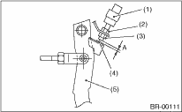

BRAKE > Stop Light Switch
Loosen the lock nut, and adjust the stop light switch position until clearance A between the threaded end of the stop light switch and stopper becomes 0.3 mm (0.012 in). Then, tighten the lock nut.
Tightening torque:
8 N·m (0.8 kgf-m, 5.8 ft-lb)

|
(1) |
Stop light switch |
|
(2) |
Lock nut A |
|
(3) |
Lock nut B |
|
(4) |
Stopper |
|
(5) |
Brake pedal |
NOTE:
Tighten lock nut B until the threaded end of switch contacts the stopper. Hold the switch so that it does not rotate, then loosen the lock nut B by approx. 60°. The clearance will become approximately 0.3 mm (0.012 in).